ggplot(chic, aes(year)) +
geom_bar(aes(fill = season), color = "grey", linewidth = 2) +
labs(x = "Year", y = "Observations", fill = "Season:")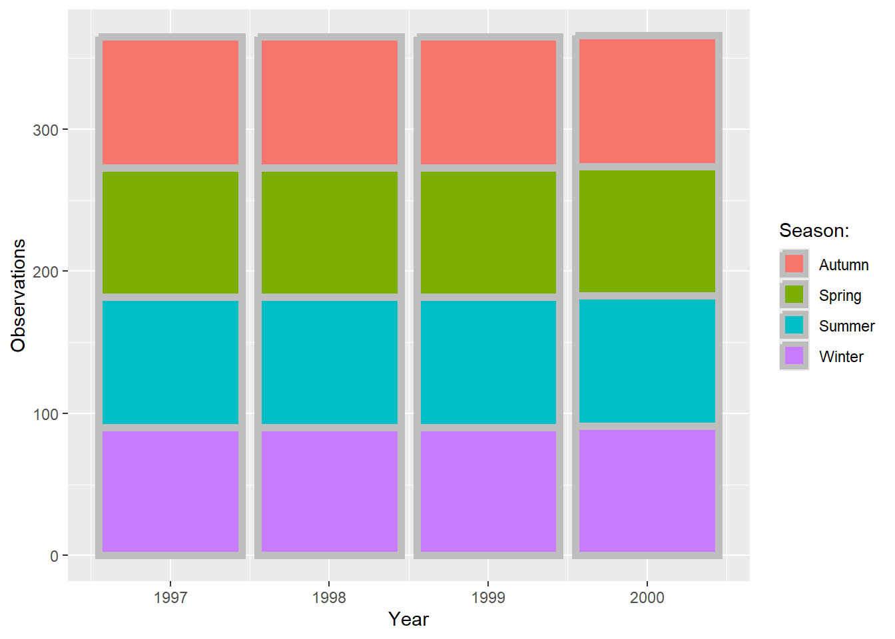
For simple applications working with colors is straightforward in {ggplot2}. For a more advanced treatment of the topic you should probably get your hands on Hadley’s book which has nice coverage. Other good sources are the R Cookbook and the `color section in the R Graph Gallery by Yan Holtz.
There are two main differences when it comes to colors in {ggplot2}. Both arguments, color and fill, can be
As you have already seen in the beginning of this tutorial, variables that are inside the aesthetics are encoded by variables and those that are outside are properties that are unrelated to the variables. This complete nonsense plot showing the number of records per year and season illustrates that fact:
ggplot(chic, aes(year)) +
geom_bar(aes(fill = season), color = "grey", linewidth = 2) +
labs(x = "Year", y = "Observations", fill = "Season:")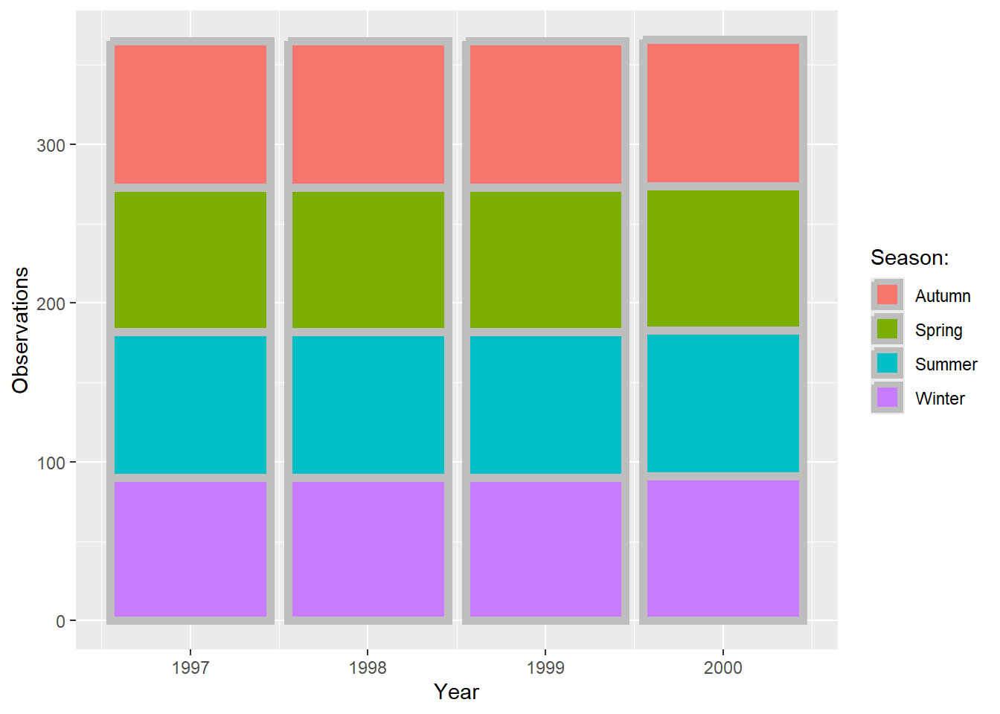
Static, single colors are simple to use. We can specify a single color for a geom:
ggplot(chic, aes(x = date, y = temp)) +
geom_point(color = "steelblue", size = 2) +
labs(x = "Year", y = "Temperature (°F)")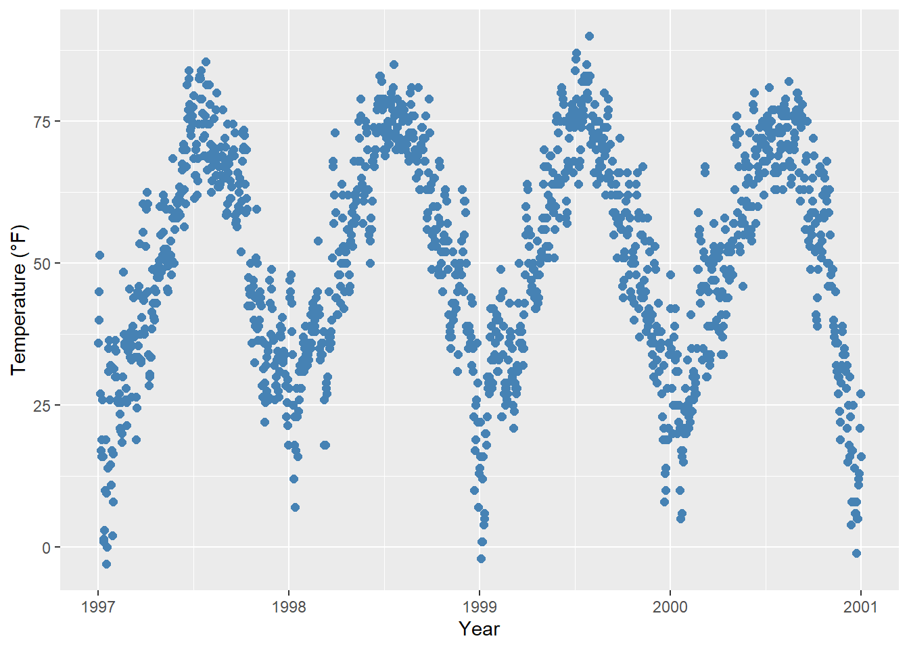
… and in case it provides both, a color (outline color) and a fill (filling color):
ggplot(chic, aes(x = date, y = temp)) +
geom_point(shape = 21, size = 2, stroke = 1,
color = "#3cc08f", fill = "#c08f3c") +
labs(x = "Year", y = "Temperature (°F)")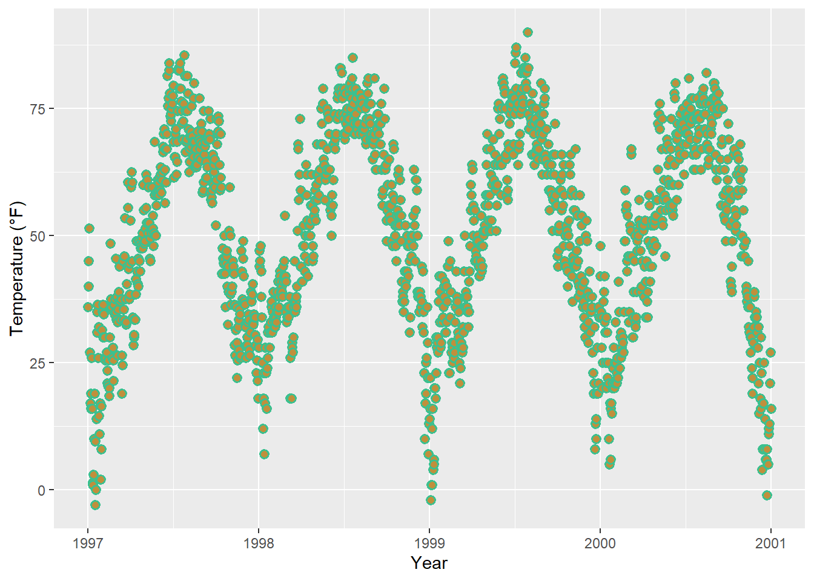
Tian Zheng at Columbia has created a useful PDF of R colors. Of course, you can also specify hex color codes (simply as strings as in the example above) as well as RGB or RGBA values (via the rgb() function: rgb(red, green, blue, alpha)).
In {ggplot2}, colors that are assigned to variables are modified via the scale_color_* and the scale_fill_* functions. In order to use color with your data, most importantly you need to know if you are dealing with a categorical or continuous variable. The color palette should be chosen depending on type of the variable, with sequential or diverging color palettes being used for continuous variables and qualitative color palettes for categorical variables:
Qualitative or categorical variables represent types of data which can be divided into groups (categories). The variable can be further specified as nominal, ordinal, and binary (dichotomous). Examples of qualitative/categorical variables are:
The default categorical color palette looks like this:
(ga <- ggplot(chic, aes(x = date, y = temp, color = season)) +
geom_point() +
labs(x = "Year", y = "Temperature (°F)", color = NULL))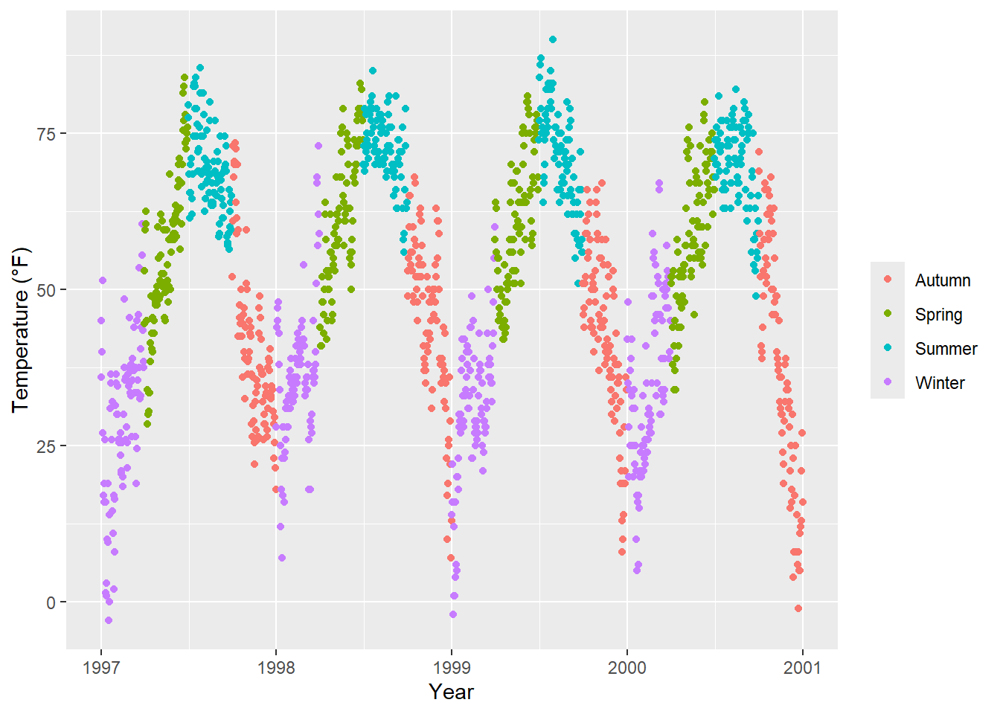
You can pick your own set of colors and assign them to a categorical variables via the function scale_*_manual() (the * can be either color, colour, or fill). The number of specified colors has to match the number of categories:
ga + scale_color_manual(values = c("dodgerblue4",
"darkolivegreen4",
"darkorchid3",
"goldenrod1"))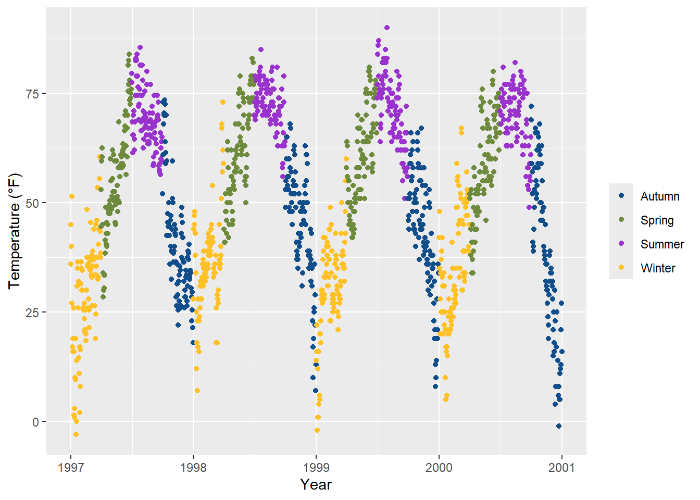
The ColorBrewer palettes is a popular online tool for selecting color schemes for maps. The different sets of colors have been designed to produce attractive color schemes of similar appearance ranging from three to twelve. Those palettes are available as built-in functions in the {ggplot2} package and can be applied by calling scale_*_brewer():
ga + scale_color_brewer(palette = "Set1")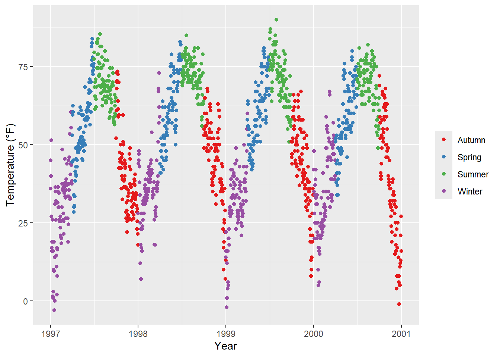
💡 You can explore all schemes available via RColorBrewer::display.brewer.all().
There are many extension packages that provide additional color palettes. Their use differs depending on the way the package is designed. For an extensive overview of color palettes available in R, check the collection provided by Emil Hvitfeldt. One can also use his {paletteer} package, a comprehensive collection of color palettes in R that uses a consistent syntax.
Examples:
The {ggthemes} package for example lets R users access the Tableau colors. Tableau is a famous visualiztion software with a well-known color palette.
library(ggthemes)
ga + scale_color_tableau()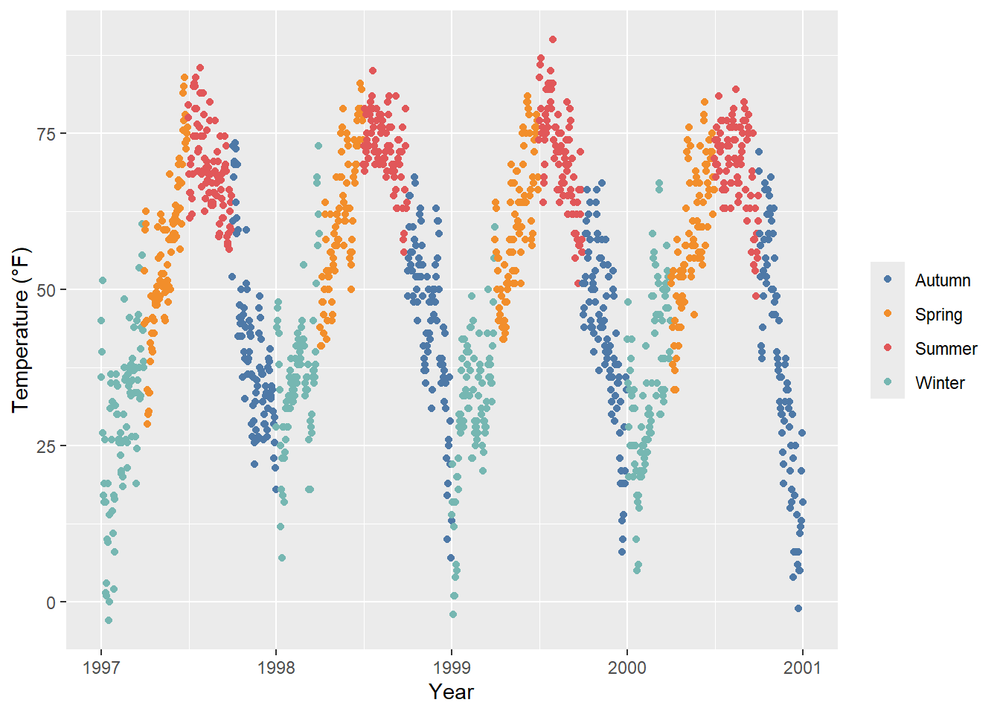
The {ggsci} package provides scientific journal and sci-fi themed color palettes. Want to have a plot with colors that look like being published in Science or Nature? Here you go!
library(ggsci)
g1 <- ga + scale_color_aaas()
g2 <- ga + scale_color_npg()
library(patchwork)
(g1 + g2) * theme(legend.position = "top")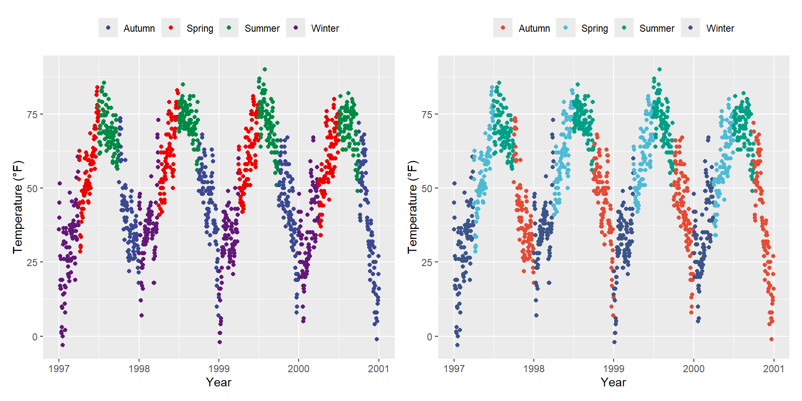
Quantitative variables represent a measurable quantity and are thus numerical. Quantitative data can be further classified as being either continuous (floating numbers possible) or discrete (integers only):
In our example we will change the variable we want to color to ozone, a continuous variable that is strongly related to temperature (higher temperature = higher ozone). The function scale_*_gradient() is a sequential gradient while scale_*_gradient2() is diverging.
Here is the default {ggplot2} sequential color scheme for continuous variables:
gb <- ggplot(chic, aes(x = date, y = temp, color = temp)) +
geom_point() +
labs(x = "Year", y = "Temperature (°F)", color = "Temperature (°F):")
gb + scale_color_continuous()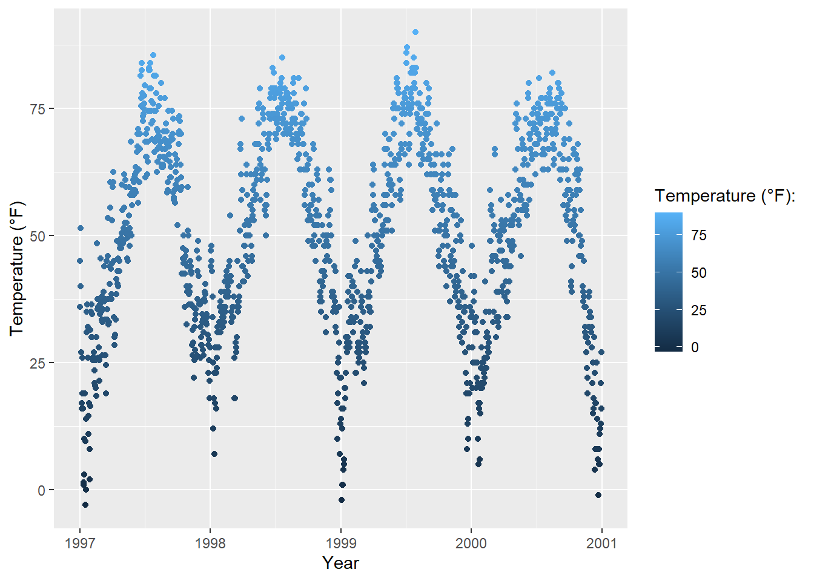
This code produces the same plot:
gb + scale_color_gradient()And here is the diverging default color scheme:
mid <- mean(chic$temp) ## midpoint
gb + scale_color_gradient2(midpoint = mid)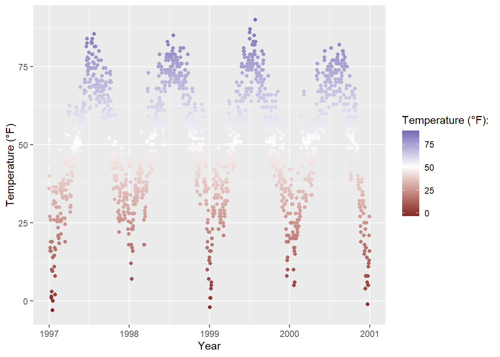
You can manually set gradually changing color palettes for continuous variables via scale_*_gradient():
gb + scale_color_gradient(low = "darkkhaki",
high = "darkgreen")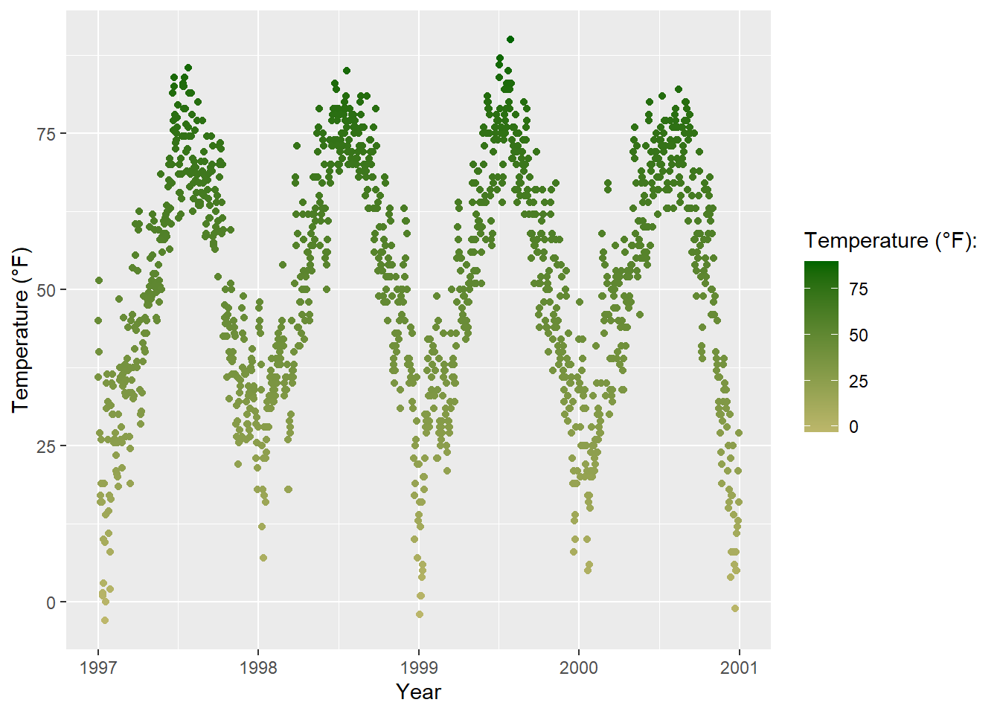
Temperature data is normally distributed so how about a diverging color scheme (rather than sequential)… For diverging color you can use the scale_*_gradient2() function:
gb + scale_color_gradient2(midpoint = mid, low = "#dd8a0b",
mid = "grey92", high = "#32a676")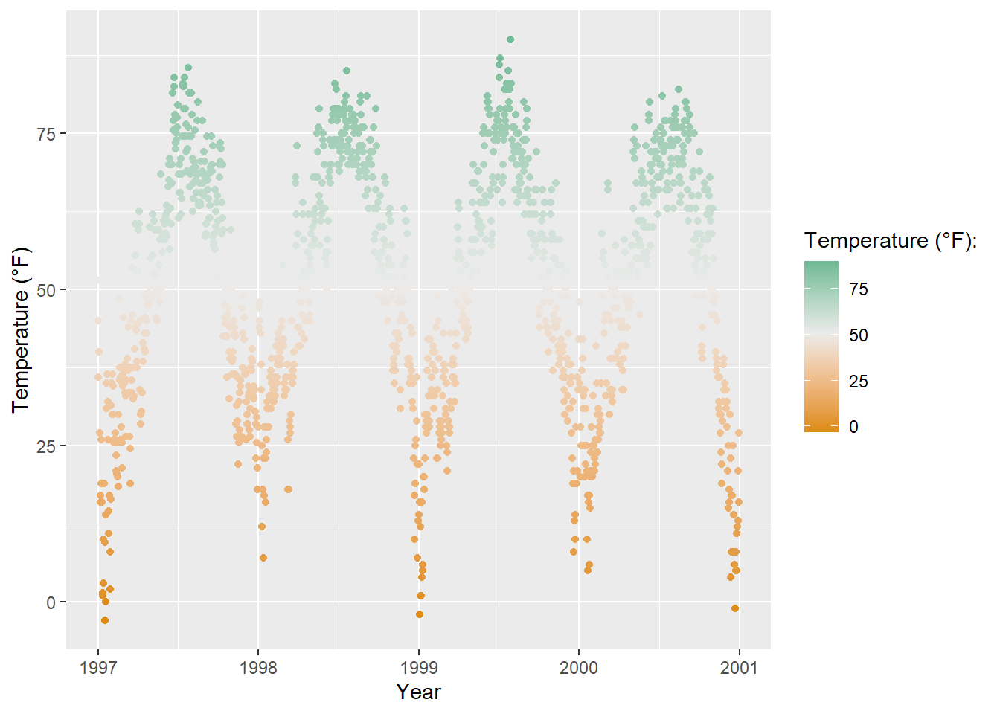
The viridis color palettes do not only make your plots look pretty and good to perceive but also easier to read by those with colorblindness and print well in gray scale. You can test how your plots might appear under various form of colorblindness using {dichromat} package.
And they also come now shipped with {ggplot2}! The following multi-panel plot illustrates three out of the four viridis palettes:
p1 <- gb + scale_color_viridis_c() + ggtitle("'viridis' (default)")
p2 <- gb + scale_color_viridis_c(option = "inferno") + ggtitle("'inferno'")
p3 <- gb + scale_color_viridis_c(option = "plasma") + ggtitle("'plasma'")
p4 <- gb + scale_color_viridis_c(option = "cividis") + ggtitle("'cividis'")
library(patchwork)
(p1 + p2 + p3 + p4) * theme(legend.position = "bottom")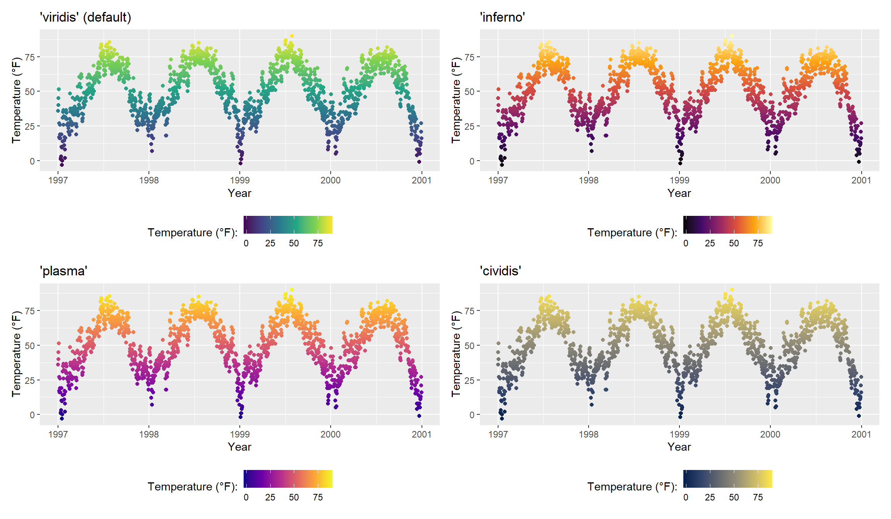
It is also possible to use the viridis color palettes for discrete variables:
ga + scale_color_viridis_d(guide = "none")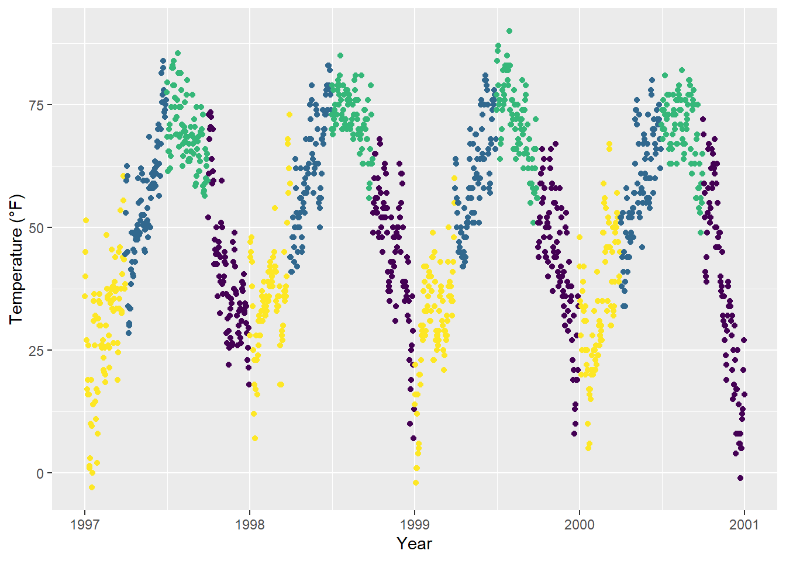
The many extension packages provide not only additional categorical color palettes but also sequential, diverging and even cyclical palettes. Again, I point you to the great collection provided by Emil Hvitfeldt for an overview.
Examples:
The {rcartocolors} packages ports the beautiful CARTOcolors to {ggplot2} and contains several of my most-used palettes:
library(rcartocolor)
g1 <- gb + scale_color_carto_c(palette = "BurgYl")
g2 <- gb + scale_color_carto_c(palette = "Earth")
(g1 + g2) * theme(legend.position = "bottom")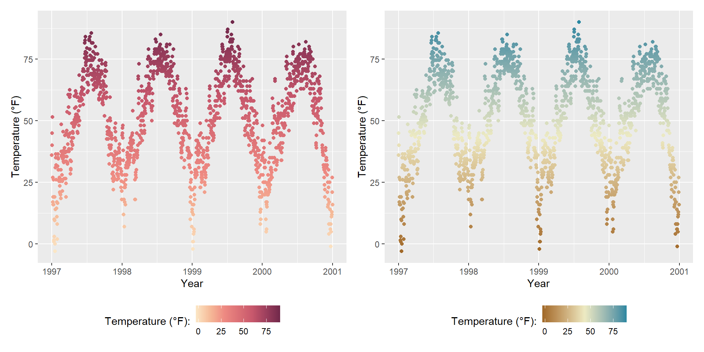
The {scico} package provides access to the color palettes developed by Fabio Crameri. These color palettes are not only beautiful and often unusual but also a good choice since they have been developed to be perceptually uniform and ordered. In addition, they work for people with color vision deficiency and in grayscale:
library(scico)
g1 <- gb + scale_color_scico(palette = "berlin")
g2 <- gb + scale_color_scico(palette = "hawaii", direction = -1)
(g1 + g2) * theme(legend.position = "bottom")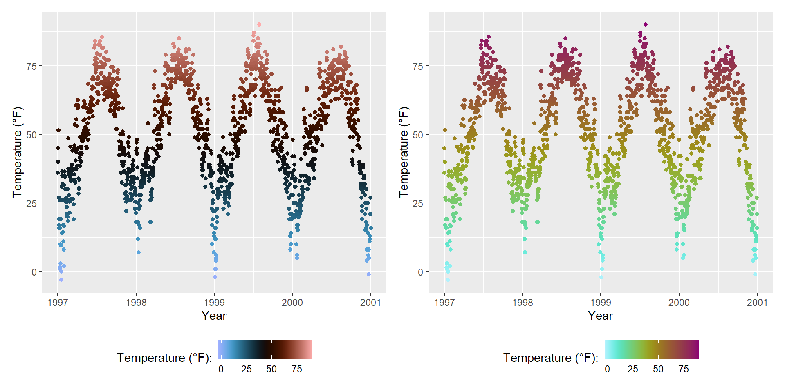
Since the release of ggplot2 3.0.0, one can modify layer aesthetics after they have been mapped to the data. Or as the {ggplot2} phrases it: “Use after_scale() to flag evaluation of mapping for after data has been scaled.”
So why not use the modified colors in the first place? Since {ggplot2} can only handle one color and one fill scale, this is an interesting functionality. Look closer at the following example where we use clr_negate() from the {prismatic} package:
library(prismatic)
ggplot(chic, aes(date, temp, color = temp)) +
geom_point(size = 5) +
geom_point(aes(color = temp,
color = after_scale(clr_negate(color))),
size = 2) +
scale_color_scico(palette = "hawaii", guide = "none") +
labs(x = "Year", y = "Temperature (°F)")Warning: Duplicated aesthetics after name standardisation: colour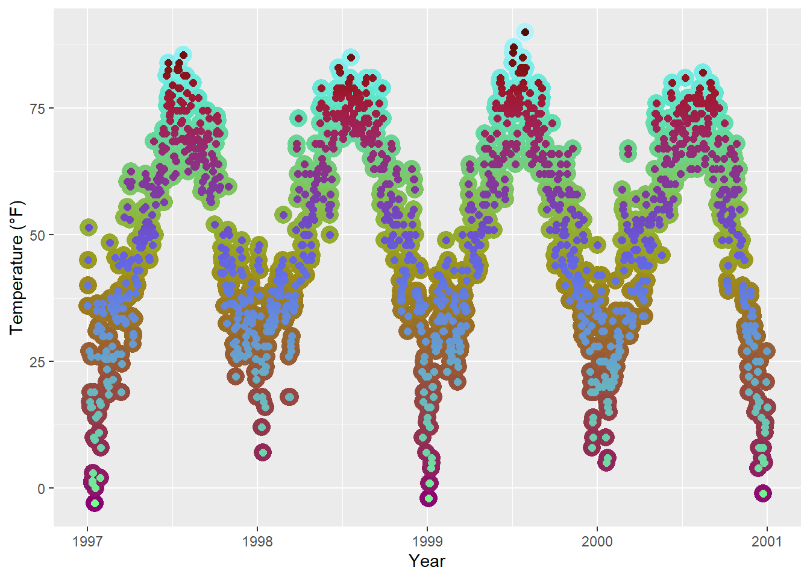
Changing the color scheme afterwards is especially fun with functions from the {prismatic} packages, namely clr_negate(), clr_lighten(), clr_darken() and clr_desaturate(). You can even combine those functions. Here, we plot a box plot that has both arguments, color and fill:
library(prismatic)
ggplot(chic, aes(date, temp)) +
geom_boxplot(
aes(color = season,
fill = after_scale(clr_desaturate(clr_lighten(color, .6), .6))),
linewidth = 1
) +
scale_color_brewer(palette = "Dark2", guide = "none") +
labs(x = "Year", y = "Temperature (°F)")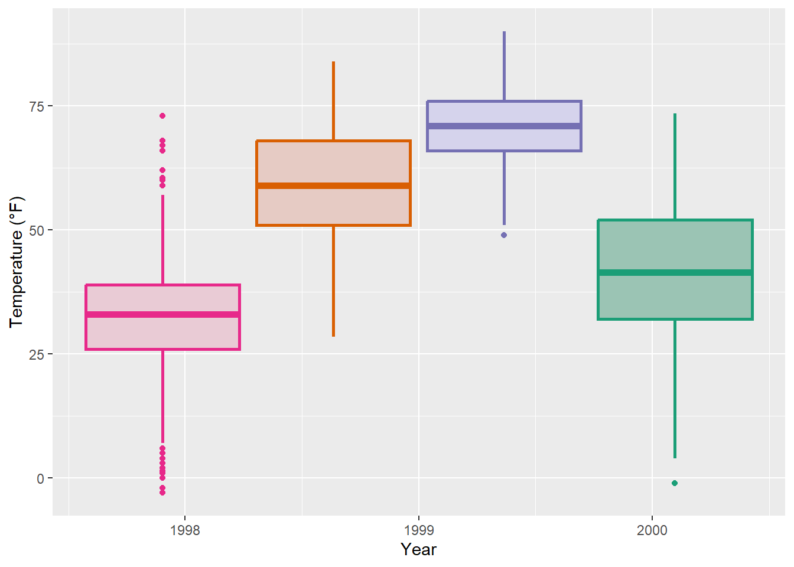
Note that you need to specify the color and/or fill in the aes() of the respective geom_*() or stat_*() to make after_scale() work.
💡 This seems a bit complicated for now—one could simply use the color and fill scales for both. Yes, that is true but think about use cases where you need several color and/or fill scales. In such a case, it would be senseless to occupy the fill scale with a slightly darker version of the palette used for color.